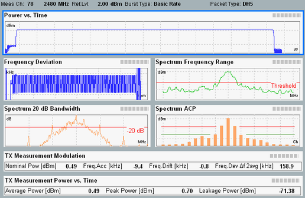

While an established connection is available, the uplink signal of the EUT can be monitored using a "Bluetooth TX Measurement" provided by option R&S CMW-KM610 or R&S CMW-KM611.
To ensure compatible measurement settings, the measurement must be coupled to the "Bluetooth Signaling" application. This coupling is done by selecting the combined signal path scenario in the measurement. As a result the measurement application uses the most important settings of the signaling application, e.g. the signal routing and analyzer settings.
The following example applies to a multi-evaluation measurement.
Proceed as follows:
In the "Bluetooth Signaling" application, use the "Bluetooth Multi Eval." softkey to switch to the multi-evaluation measurement.
The measurement application is opened and the combined signal path scenario is selected automatically. The trigger signal provided by the signaling application is selected automatically as well.
Press the "Assign View" hotkey. Select the multi-evaluation measurement.
Press [ON | OFF] to start the measurement.
The main view provides an overview of the measurement results.

Bluetooth multi-evaluation: overview (BR)To enlarge a diagram presented in the main view, perform one of the following actions:
Double-click it using a connected mouse.
Select it by turning the rotary knob. Open it by pressing the rotary knob.
In the combined signal path, the signal routing and analyzer settings are controlled by the signaling application. The TX measurement displays the corresponding signaling settings instead of its own settings. The configurable signal routing and analyzer settings of the signaling application can be modified both via the measurement GUI and via the GUI of the signaling application. To configure the signal routing and analyzer settings via remote commands, the commands of the signaling application have to be used. |